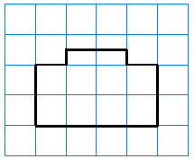
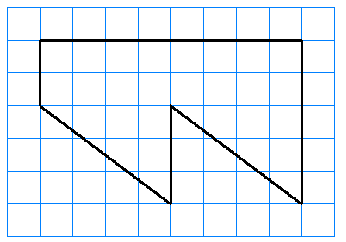
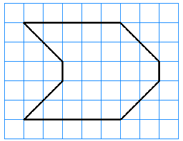

Section 1.5 Perimeter and Area
Perimeter
Area
Estimating Area

Subsection 1.5.1 Perimeter
When we speak of the perimeter of a region, we usually mean the outer edge or boundary of the region. In mathematics, the perimeter means the length of that boundary.
Example 1.5.1.
To find the perimeter of the region at right we add up the lengths of its sides:
The perimeter of the region is 20 inches.

Note 1.5.2.
Imagine that you are walking around the edge of the region. (If it is a very small region, imagine that you are an ant walking around the region.) The distance that you walk in one circuit around the region is its perimeter.

Checkpoint 1.5.3.
One reason you might want to find a perimeter is to calculate the amount of fence you need to surround a region. Find the perimeter of the community garden shown below.
267 ft
Perimeter.
To find the perimeter of a straight-sided figure:
Measure the length of each side.
Add up the lengths of the sides.
Activity 1.5.1. Perimeter.
-
Find a straight-sided object near you. (Maybe a book, or a table-top? How about something more interesting, with more sides?) Make a sketch of your object below. Now use a ruler or yardstick to calculate the object's perimeter. First find the perimeter in inches, and then in centimeters.
Sketch
Perimeter in inches:
Perimeter in centimeters:
-
Label the length, in centimeters, of each side of the triangle. Then find its perimeter.
-

Perimeter in centimeters:
-
Perimeter in centimeters:
-
On the centimeter grid below, sketch two rectangles with different shapes that each have a perimeter of 20 centimeters. Label the dimensions (the length and the width) of each rectangle.

Note 1.5.4.
How can we find the perimeter of a figure if the sides are not straight? Well, we could use a tape measure, or we could wrap a string around the edge of the figure, then measure the length of the string.

Subsection 1.5.2 Area
Here are two rectangles with the same perimeter. They represent garden plots for blueberry bushes, and the lines in the grids represent measurements in yards. You can check that both rectangles have a perimeter of 24 yards, so both garden plots require the same amount of fence to keep out the deer.

Which garden plot has the most room for blueberry bushes inside, Garden A or Garden B? Suppose that each blueberry bush fills one square on the grid. Which rectangle encloses the most squares?
Garden B has more room inside. The number of squares that fit inside a perimeter is called the area of the region enclosed. We measure area in square units; in this case, square yards. The area of Garden A is 27 square yards, and the area of Garden B is 36 square yards.
Definition.
A square unit is just a square that measures 1 unit on each side. The figure below shows 1 square inch and 1 square centimeter.

Note 1.5.5.
We cannot use the same units to measure both area and perimeter. The units for perimeter, such as inches or miles, measure length. For area we need units that measure space. For area, we use square units.
The more square units that fit inside a region, the larger its area!
Example 1.5.6.
Find the area of the figure below. Each square in the grid represents one square foot.
It may be easier to count the squares inside the figure if we partition it into 3 rectangular pieces, like this:

The total number of squares inside the figure is
The area of the figure is 34 square feet.
Question: Would the figure in the previous Example have the same area if you rearranged the pieces as shown below?

Checkpoint 1.5.7.
Find the area of the figure below. The lines on the grid represent centimeters.
24 sq cm
Note 1.5.8.
Do you see the difference between area and perimeter?
\(\blert{\text{Perimeter}}~\) measures the \(\blert{\text{distance around the outside}}\) of a region.
\(\blert{\text{Area}}~\) measures the amount of \(\blert{\text{space enclosed inside}}\) the region.
Perimeter is measured in linear units, and area is measured in square units. For example, the perimeter of the figure shown at right is 4 inches, and its area is 1 square inch.

Checkpoint 1.5.9.
Find the perimeter and area of each figure. Each square measures 1 centimeter on each side.


perim = 6 cm, area = 2 sq cm
perim = 8 cm, area = 3 sq cm
perim = 10 cm, area = 4 sq cm
perim = 10 cm, area = 4 sq cm
perim = 7 cm, area = 3 sq cm
Subsection 1.5.3 Estimating Area
What if square units don't fit evenly inside a region?
Example 1.5.10.
Find the area of the triangle. The grid represents inches.

This is actually an easy example, because the diagonal side of the triangle cuts each unit square in half. So we can pair up the 6 half-squares to make 3 whole squares. Adding those squares to the 15 whole squares, we find that the area is
Note 1.5.11.
Here is another way to find the area of the triangle in the last Example. Note that the triangle is actually half of a rectangle, as shown at right. The rectangle has 6 rows of 6 squares each, so its area is
The area of the triangle is half of that, or 18 square inches.
The method described in the Note above is useful in many situations. We can enclose the figure in a rectangle, and subtract the areas that are not inside the region.
Example 1.5.12.
Find the area enclosed by the octagon shown below. The grid represents centimeters.

Imagine enclosing the octagon in a rectangle, as shown at right. You can check that the rectangle encloses 7 rows of squares, and each row is 7 squares long. Thus, the area of the rectangle is
Now we just need to subtract the areas of the four "corners" of the rectangle.

By looking at the top left corner, perhaps you can see that each of the four corners is half of a square whose area is 4 square centimeters. So each corner has an area of 2 square centimeters, and all four corners have a total area of 8 square centimeters.
Finally, we subtract the area of the corners from the area of the rectangle, and what's left is the area inside the octagon:
Checkpoint 1.5.13.
Find the area of the parallelogram. Enclose the figure in a rectangle, then subtract the areas that are not inside the parallelogram. The grid represents centimeters.

22 sq cm
We have investigated three different ways to calculate the area of a region.
Some methods for calculating area:.
Count the unit squares enclosed in the region, including your estimate of the number of whole squares made up of partial squares.
Use multiplication to calculate the number of unit squares inside a rectangle.
Enclose the region in an imaginary rectangle, calculate the area of the rectangle, and then subtract the areas of the parts outside the region.
Activity 1.5.2. Area.
In this Activity, all grids represent centimeters.
-
Estimate the area of each region by piecing together squares as necessary.
- 
-
Use the fact that a triangle is half of a rectangle to find the area of each region. Hint: It may help to draw in a useful vertical line (or two).
-
Find the area of each region by enclosing it in a rectangle and subtracting the areas of the parts outside the region. Show your method.
- 
- 

Subsection 1.5.4 Vocabulary
perimeter
area
square unit
Exercises 1.5.5 Practice 1.5
1.
-
On the centimeter grids below, draw three rectangles of different sizes and shapes.

-
In the table below, record the length and width of each rectangle, then calculate its perimeter and area. Be sure to include units in your answers.
Length Width Perimeter Area Rectangle 1 \(\hphantom{000000000000}\) \(\hphantom{000000000000}\) \(\hphantom{000000000000}\) \(\hphantom{000000000000}\) Rectangle 2 Rectangle 3
Note 1.5.14.
You can download more free grid paper at
\(\blert{\text{http://www.printablepaper.net/category/graph}}\)
2.
On another grid, copy the three rectangles you drew in problem 1, but arrange them into one composite (combined) shape.
Do you think the area of the new shape will be larger, smaller, or the same as the sum of the areas of the three rectangles? Calculate the area of the new shape to find out.
Do you think the perimeter of the new shape you made in problem 2 will be larger, smaller, or the same as the sum of the perimeters of the three rectangles? Calculate the perimeter of the new shape to find out.
3.
On a centimeter grid, draw any region you like, as long as its sides are horizontal and vertical and fall on grid lines. Calculate its perimeter and area.
4.
How is the mathematical meaning of perimeter different from the usual English meaning?
5.
How would you describe the difference between area and perimeter?
6.
What is a square unit, and how is it used?
7.
If you know the length and width of a rectangle, how can you find its perimeter
8.
Which of the following are correct ways to calculate the perimeter of a rectangle?
Double the sum of the length plus the width
Multiply the length times the width
Add twice the length to twice the width
Double the product of the length times the width
9.
On another grid, draw three different rectangles that have a perimeter of 18 centimeters. Then complete the table.
| Length | Width | Perimeter | Area | Length plus Width | |
| Rectangle 1 | \(\hphantom{000000000000}\) | \(\hphantom{000000000000}\) | 18 cm | \(\hphantom{000000000000}\) | \(\hphantom{000000000000}\) |
| Rectangle 2 | 18 cm | ||||
| Rectangle 3 | 18 cm |
10.
Do all of the rectangles in Problem 9 have the same area?
What do you notice about the sum of the length plus the width of each rectangle?
Exercise Group.
For Problems 11-12, use a ruler to measure the length of each side.
First measure in inches. Round your measurements to the nearest quarter-inch. Then calculate the perimeter of the figure.
Then measure in centimeters. Round your measurements to the nearest half-centimeter. Then calculate the perimeter of the figure.
11.

12.
13.
Measure the length and width of your textbook in centimeters.
Calculate the perimeter of your textbook.
14.
Measure the length and width of a sheet of notebook paper in inches.
Calculate the perimeter of a sheet of notebook paper.
15.
How many sides of a rectangle do you need to measure in order to find its perimeter?
How many sides of a square do you need to measure in order to find its perimeter?
16.
How many sides of an equilateral triangle do you need to measure in order to find its perimeter?
How many sides of an isosceles triangle do you need to measure in order to find its perimeter?
17.
One side of a stop sign measures 14.9 inches. What is the length of the white border around the edge of the stop sign?

18.
One side of the Pentagon building in Washington, D.C. is 921 feet long. If you walk all the way around the outside of the building once, how far will you walk?
Exercise Group.
For Problems 19-22, the grids represent feet. Find
the perimeter of the region,
the area of the region.
19.

20.

21.
22.
23.
In this problem we'll consider some rectangular closets that have area 36 square feet. Complete the table below, using sketches to help you as needed.
| Width (ft) | Length (ft) | Perimeter (ft) | Area (sq ft) | |
| Closet 1 | \(1\) | \(\hphantom{000000000000}\) | \(\hphantom{000000000000}\) | \(36\) |
| Closet 2 | \(2\) | \(\hphantom{000000000000}\) | \(\hphantom{000000000000}\) | \(36\) |
| Closet 3 | \(3\) | \(\hphantom{000000000000}\) | \(\hphantom{000000000000}\) | \(36\) |
| Closet 4 | \(4\) | \(\hphantom{000000000000}\) | \(\hphantom{000000000000}\) | \(36\) |
| Closet 5 | \(6\) | \(\hphantom{000000000000}\) | \(\hphantom{000000000000}\) | \(36\) |
Which closet has the smallest perimeter?
Which closet has the largest perimeter?
Which closet do you think would be the most useful? Why?
24.
Rolly has 60 yards of fence to enclose an area for her pet goats. Draw some possible rectangular areas on grid paper, then fill in the table.
| Width (yd) | Length (yd) | Perimeter (yd) | Area (sq yd) | |
| Pen 1 | \(5\) | \(\hphantom{000000000000}\) | \(60\) | \(\hphantom{000000000000}\) |
| Pen 2 | \(10\) | \(\hphantom{000000000000}\) | \(60\) | \(\hphantom{000000000000}\) |
| Pen 3 | \(15\) | \(\hphantom{000000000000}\) | \(60\) | \(\hphantom{000000000000}\) |
| Pen 4 | \(18\) | \(\hphantom{000000000000}\) | \(60\) | \(\hphantom{000000000000}\) |
| Pen 5 | \(24\) | \(\hphantom{000000000000}\) | \(60\) | \(\hphantom{000000000000}\) |
Which pen encloses the smallest area?
Which pen encloses the largest area?
Do you think Rolly could enclose an even larger area by using a different shape?
Exercise Group.
For Problems 25-28, use one of the methods from Activity 2 to find the area of the region. The grids represent centimeters.
25.

26.

27.
28.

29.
To find the area of a rectangle, do we really need to count the square units inside its edges?
-
Find the area of the rectangle below. The grid represents inches.

Did you actually count the unit squares, or did you use what you know about multiplication? \(4 \times 5 = 20\) square inches
-
Now find the area of this rectangle. The edges are marked in inches. You could sketch in the grid so that you can count squares, but can you see that you don't have to? You can use multiplication instead.
Length of rectangle: \(\fillinmath{XXX}\)
Width of rectangle: \(\fillinmath{XXX}\)
Area of rectangle: \(\fillinmath{XXX}\)
-
Finally, find the area of this rectangle, where you are given its length and width.

Find the perimeter of the rectangle in part (c).
30.
Find the area and perimeter of a rectangle whose length is 15 meters and whose width is 12 meters.
Exercise Group.
For Problems 31-34,
Find the perimeter of the figure.
Draw in horizontal or vertical lines to create rectangles, then find the area of the figure.
31.

32.
33.
34.

35.
-
What is the area of the rectangle shown below? What is its perimeter?
Draw a line to divide the rectangle into two rectangles with equal area. (Is there more than one way to do this?) Shade one of the two new rectangles.
What is the perimeter of the new rectangle? Is it one-half the perimeter of the original rectangle? Do you get the same perimeter no matter how you made the new rectangle?
36.
-
Here are two more copies of the rectangle. On the left copy below, draw lines to make a rectangle with one-fourth of the area. Is there more than one way to do this? Shade the new rectangle.
What is the perimeter of the new rectangle? Is it one-fourth the perimeter of the original rectangle?
On the right copy above, make your new rectangle by drawing lines in a different way. Does this rectangle have the same perimeter as the one you you made in part (b)?
37.
The perimeter of a rectangular dog park is 200 yards. What can you say about the sum of its length and width?
38.
The area of a rectangular solar panel must be 320 square feet. If you know the length of the solar panel, how can you find its width?
39.
Francine and Delbert each cut a rectangular brownie out of the pan. Francine's brownie measured 3 inches by 4 inches, and Delbert's brownie measured 4 inches by 5 inches. How much bigger was Delbert's brownie than Francine's brownie? (Choose the correct answer.)
2 inches
1 square inch
7 square inches
None of these; the true answer is \(\fillinmath{XXX}\)
40.
The wool rug that Keesha likes costs $6 per square foot. How much more does a 6 foot by 8 foot rug cost than a 5 foot by 7 foot rug?
41.
Toshi has just completed a large painting that measures 5 feet by \(3\frac{1}{2}\) feet. He plans to install it in a frame that is 3 inches wide.
What will be the area of the framed painting? Hint: What fraction of a foot is 3 inches?
What will be the perimeter of the framed painting?
42.
The reflecting pool in front of city hall is 60 feet long and 20 feet wide. The water is surrounded by an 18 inch stone ledge.
What is the area of the water surface? Hint: What fraction of a foot is 18 inches?
What is the perimeter of the water surface?
43.
Fill in the missing information in the table. It may be helpful to sketch each rectangle.
| Rectangle | Width | Length | Perimeter | Area |
|---|---|---|---|---|
| 1 | 3 ft | 6 ft | \(\hphantom{000000000000}\) | \(\hphantom{000000000000}\) |
| 2 | 5 ft | \(\hphantom{000000000000}\) | 26 ft | \(\hphantom{000000000000}\) |
| 3 | \(\hphantom{000000000000}\) | 9 ft | \(\hphantom{000000000000}\) | 72 sq ft |
| 4 | 12 ft | \(\hphantom{000000000000}\) | \(\hphantom{000000000000}\) | 240 sq ft |
| 5 | \(\hphantom{000000000000}\) | \(\hphantom{000000000000}\) | 50 ft | 150 sq ft |
44.
-
Use the grid below to draw a square yard. The grid is marked in feet.
How many square feet are there in a square yard?
Now suppose the grid is marked in inches and draw a square foot.
How many square inches are there in a square foot?
Exercise Group.
For Problems 45-48, look at a ruler to help you convert units.
45.
3 cm = mm
1.8 cm = mm
0.6 cm = mm
0.25 cm = mm
46.
25 cm = mm
14 cm = mm
7 cm = mm
36 cm = mm
47.
\(\dfrac{1}{2}\) in = \(\dfrac{?}{8}\) in
\(\dfrac{3}{4}\) in = \(\dfrac{?}{16}\) in
\(\dfrac{5}{8}\) in = \(\dfrac{?}{16}\) in
\(\dfrac{5}{4}\) in = \(\dfrac{?}{8}\) in
48.
\(\dfrac{6}{8}\) in = \(\dfrac{?}{4}\) in
\(\dfrac{8}{16}\) in = \(\dfrac{?}{2}\) in
\(\dfrac{6}{4}\) in = \(\dfrac{?}{2}\) in
\(\dfrac{6}{16}\) in = \(\dfrac{?}{8}\) in
Exercise Group.
For Problems 49-52, record the base and height of the triangle, then find the area of the triangle. The grids are scaled in centimeters.
49.
Base \(\fillinmath{XXX}\)
Height \(\fillinmath{XXX}\)
Area \(\fillinmath{XXX}\)
50.
Base \(\fillinmath{XXX}\)
Height \(\fillinmath{XXX}\)
Area \(\fillinmath{XXX}\)
51.
Base \(\fillinmath{XXX}\)
Height \(\fillinmath{XXX}\)
Area \(\fillinmath{XXX}\)
52.

Base \(\fillinmath{XXX}\)
Height \(\fillinmath{XXX}\)
Area \(\fillinmath{XXX}\)
53.
Do you see a pattern relating the base and height of the triangle to its area?
-
Use the figures below to explain why your formula makes sense.

-
Without measuring, which of the triangles below do you think has the largest area? Now check, using your formula from part (b).

54.
A parallelogram is a four-sided figure in which opposite sides are parallel. Use the figures below to explain why the area of a parallelogram is given by the product of its base, \(b\text{,}\) and its height, \(h\text{.}\)

55. Challenge Problem.
The picture on the left below shows a solid figure called a truncated icosahedron (eye-kosa-he-dron). If you inflate it a little bit, you get a soccer ball. The surface of the soccer ball is made up of 20 hexagons and 12 pentagons. The hexagons have six sides (the white pieces), and the pentagons have five sides (the black pieces).
-
Find the area of each pentagon on a soccer ball. The side of the pentagon is 1.8 inches, and the distance from the center of the pentagon to its side is 1.24 inches.

Find the area of each hexagon on a soccer ball. The side of the pentagon is 1.26 inches, and the distance from the center of the pentagon to its side is 1.56 inches.